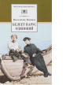

Белеет парус одинокий

Повесть "Белеет парус одинокий" переносит читателя в Одессу начала XX века, в самую бурю событий первой русской революции. Герои повести Петя и Гаврик - обыкновенные одесские мальчишки, с которыми на страницах книги происходит немало разных, необычных и важных, серьезных и веселых приключений. Для среднего школьного возраста.